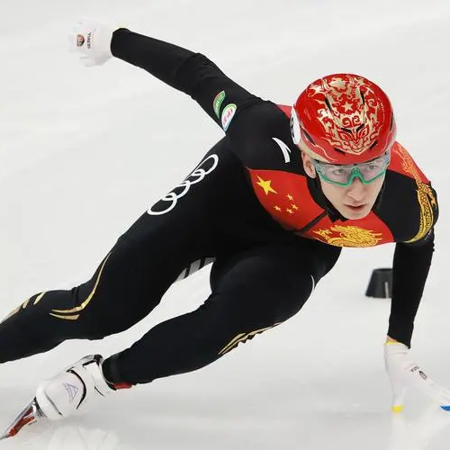

天才 少女
谷爱凌
一战 成名
苏翊铭

热爱 不息
武大靖
冰上 C P
隋文静&韩聪
谷爱凌
自由式滑雪运动员
“天才少女”谷爱凌
2022年2月8日，北京冬奥会自由滑雪女子大跳台决赛，中国选手谷爱凌拿到了金牌。
“最后一跳我做了一个从来没有挑战过的动作，历史上没有女孩挑战过的动作，我最后这个选择是因为我想做到最好，我想向世界展示我自己的能力。”
女性力量
“我也会害怕，可我更害怕不去尝试、给自己设限”，
现今仍有许多女性还在世俗桎梏下犹豫、煎熬，但像中国女足、谷爱凌这样的优秀女性正不断激励着我们，
不拘泥既有，不设限未来，勇敢跨出改变的第一步，只要坚持走到底，全世界都会为你让路。
天才=99%的努力+1%的天份
她锻炼时曾经摔到脑震荡并短暂失忆，她说她学习的时候就用百分之百的精力去学习，
然后考上了斯坦福；训练的时候就用百分之百的时间去滑雪然后拿到了冬奥会的金牌。
没有人能随随便便的成功，或许谷爱凌比我们多了些天赋、多了份幸运，但是也比我们多了些努力、多了些坚定。
苏翊鸣
单板滑雪运动员
“一战成名”苏翊鸣
2022年2月6日，
2022年北京冬奥会单板滑雪男子坡面障碍技巧资格赛展开争夺，
中国选手苏翊鸣发挥惊艳，第一轮就以86.80分的高分获得第一，最终他以预赛第一的成绩晋级决赛。
“心中有力量”
“这块金牌不仅是我自己，也是所有人共同努力的结果。”
赛后，苏翊鸣表示取得高分源于自己心态调整得很好，
“当我站在出发台上看到每一位朋友、家人，还有祖国在背后支持着我，我觉得没什么可以紧张的，尽自己最大努力去完成最好的表现，享受比赛，这就是我唯一要做的。”
“百分百的投入”
苏翊鸣的天赋不仅体现在滑雪上，连演戏都优于常人。
他在《智取威虎山》中饰演一名足智多谋的抗战少年“小栓子”。但他的志向并不在此，进入国家队之后，苏翊鸣在经过权衡之下，
选择了暂时放弃演戏。谈到在演戏与滑雪之间的取舍，苏翊鸣说：“我必须把100%的精力放到我想要做的事情上。”
武大靖
短道速滑运动员
"起点" 107次跌倒
第一次上冰，武大靖摔了107跤。时至今日，
武大靖依然清晰地记得这个数字。武大靖的启蒙教练李军回忆说，武大靖刚来学滑冰时，
“他给我的第一印象就是好动，但能吃苦，不服输。” 在李军看来，武大靖能一步步地走到今天，依靠的正是性格里那种韧劲。
"热爱" 永不止息
平昌冬奥会速度滑冰男子500米决赛中，
武大靖第一个冲线，为中国军团夺得首金。又一个四年过去了，武大靖再一次站上了冬奥会的赛道。这一次，他已是中国军团的领军人物。
武大靖说，自己是幸运的：“因为我能为自己喜欢的事情去奋斗，同时还能为祖国去奋斗。”
"冬奥梦圆，不负韶华"
“只要祖国需要，我还会继续在赛场上，全力以赴地去拼每一场比赛”
回顾往昔，武大靖最大的感触就是：选择很重要、目标很重要。
“就算在中途遇到困难、挫折，只要目标够坚定，只要有足够强大的内心，最后的结果也会是好的。”
“感谢团队没有放弃，感谢家人鼓励支持，也感谢那个从未放弃的自己。”
隋文静/韩聪
花样滑冰双人滑
"不被看好的接班人"
刚有点成绩那会儿，外界总是不看好这对组合。他们认为把自身的不利转化为优势的欲望，是藏在他们身体里的一股能量。
转战成人组后，两人在国内外赛场获誉无数。曾经不被看好的两人，终于打出了一片天。
"双份的磨难"
2013年隋文静患上骨垢炎，伤病的困扰导致两人错失索契冬奥会的参赛资格。2018年平昌冬奥会上短节目比赛
最终他们以0.43分的差距与奥运会金牌失之交臂。一次次的磨难之下，他们用冰刀披荆，以梦想斩棘，走进新的一个奥运周期。
"冰上cp的另类情感"
十五年的陪伴，一起经历了荣耀、挫折、伤病，对于两人而言，携手追逐梦想，做彼此的依靠，或许比爱情、亲情来得更直接和炙热。
2019年日本琦玉花滑世锦赛，他们以79.24分的好成绩打破了世界纪录。
他们把彼此称为“桥梁”，你在这头，我也正好站在那头，才能支撑起共同的梦想。